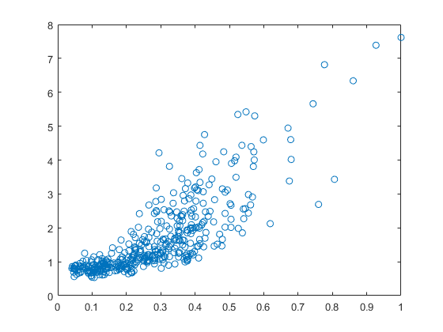
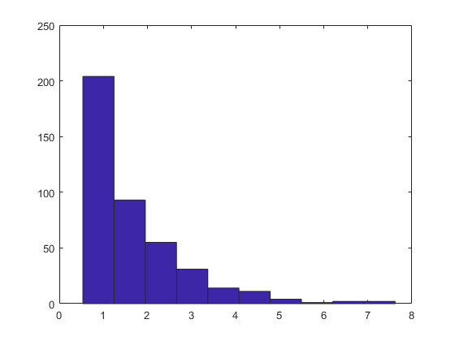
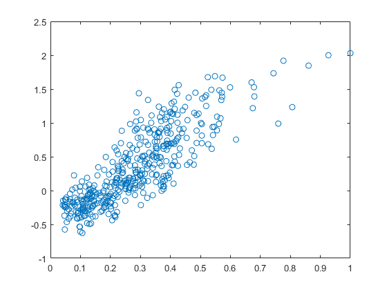

Contents
%https://rstudio-pubs-static.s3.amazonaws.com/90852_9d2200f52d32470b80d2e62657f362a6.html
Understanding the data
Data from the 1st of January 2004 to 31st December 2011
T = readtable('FluTrain.csv','Delimiter',','); Train.Weeks = T{:,1}; Train.ILI = T{:,2}; Train.Queries = T{:,3}; % Visualization figure; plot(Train.Queries, Train.ILI, 'o');
Question 2.1.1
1) The highest percentage of ILI-related physician visits is 7.619 2) The highest percentage of ILI-related query franction is 1 There is a positive correlation between the queries and the physician visits The day corresponding to the start of these weeks is 18th October 2009 for both variables
dayILI = Train.Weeks(find(Train.ILI == max(Train.ILI),1));
dayQ = Train.Weeks(find(Train.Queries == max(Train.Queries),1));
% Aggregate level
figure;
hist(Train.ILI)
 Question 2.1.2
Most of the ILI values are small, with relatively small number of much larger values (in statistics, this sort of data is called "skew right")
Linear regression
Natural log prediction of the ILI value
figure;
plot(Train.Queries, log(Train.ILI), 'o');
 Question 2.2.3
There is a positive, linear relationship between log(ILI) and Queries
Question 2.2.4
Based on the data from the previous question, the model that best describes the relation between the values of ILI and queries is: log(ILI) = \beta